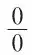

中文
中文A. Eddington
Editor’s Note
Ten years ago, Arthur Eddington claims here, practically every notable physicist was a determinist, at least regarding physical processes. Physicists believed they possessed a powerful scheme of causal scientific law, embodied especially in classical mechanics, and saw the project of science as explaining ever more phenomena within this scheme. The quantum theory has now changed all this, stimulating reactions ranging from incredulity and cynicism to yawning indifference. Eddington argues, however, that the new indeterministic theory cannot be considered to be a rejection of the scientific method. He compares the older deterministic or “primary” laws to a scientific gold standard, now replaced by a “secondary” currency. Most other physicists now wonder why those primary laws were once accorded such reverence. 中文
DETERMINISM has faded out of theoretical physics. Its exit has been commented on in various ways. Some writers are incredulous, and cannot be persuaded that determinism has really been eliminated. Some think that it is only a domestic change in physics, having no reactions on general philosophic thought. Some imagine that it is a justification for miracles. Some decide cynically to wait and see if determinism fades in again. 中文
The rejection of determinism is in no sense an abdication of scientific method; indeed it has increased the power and precision of the mathematical analysis of observed phenomena. On the other hand, I cannot agree with those who belittle the general philosophical significance of the change. The withdrawal of physical science from an attitude it has adopted consistently for more than two hundred years is not to be treated lightly; and it involves a reconsideration of our views with regard to one of the perplexing problems of our existence. In this address, I shall deal mainly with the physical universe, and say very little about mental determinism or freewill. That might well be left to those who are more accustomed to arguing about such questions, if only they could be awakened to the new situation which has arisen on the physical side. At present I can see little sign of such an awakening. 中文
Definitions of Determinism
Let us first be sure that we agree as to what is meant by determinism. I quote three definitions or descriptions for your consideration. The first is by a mathematician (Laplace):
We ought then to regard the present state of the universe as the effect of its antecedent state and the cause of the state that is to follow. An intelligence, who for a given instant should be acquainted with all the forces by which Nature is animated and with the several positions of the entities composing it, if, further, his intellect were vast enough to submit those data to analysis, would include in one and the same formula the movements of the largest bodies in the universe and those of the lightest atom. Nothing would be uncertain for him; the future as well as the past would be present to his eyes. The human mind in the perfection it has been able to give to astronomy affords a feeble outline of such an intelligence. … All its efforts in the search for truth tend to approximate without limit to the intelligence we have just imagined. 中文
The second is by a philosopher (C. D. Broad):
“Determinism” is the name given to the following doctrine. Let S be any substance, ψ any characteristic, and t any moment. Suppose that S is in fact in the state δ with respect to ψ at t. Then the compound supposition that everything else in the world should have been exactly as it in fact was, and that S should have been in one of the other two alternative states with respect to ψ is an impossible one. [The three alternative states (of which δ is one) are to have the characteristic ψ, not to have it, and to be changing.] 中文
The third is by a poet (Omar Khayyám):
With Earth’s first Clay They did the Last Man knead,
And there of the Last Harvest sow’d the Seed:
And the first Morning of Creation wrote What the Last Dawn of Reckoning shall read. 中文
I propose to take the poet’s description as my standard. Perhaps this may seem an odd choice; but there is no doubt that his words express what is in our minds when we refer to determinism. The other two definitions need to be scrutinised suspiciously; we are afraid there may be a catch in them. In saying that the physical universe as now pictured is not a universe in which “the first morning of creation wrote what the last dawn of reckoning shall read”, we make it clear that the abandonment of determinism is no technical quibble, but is to be understood in the most ordinary sense of the words. 中文
It is important to notice that all three definitions introduce the time-element. Determinism postulates not merely causes but pre-existing causes. Determinism means predetermination. Hence in any argument about determinism the dating of the alleged causes is an important matter; we must challenge them to produce their birth certificates. 中文
Ten years ago, practically every physicist of repute was, or believed himself to be, a determinist, at any rate so far as inorganic phenomena are concerned. He believed that he had come across a scheme of strictly causal law, and that it was the primary aim of science to fit as much of our experience as possible into such a scheme. The methods, definitions, and conceptions of physical science were so much bound up with this assumption of determinism that the limits (if any) of the scheme of causal law were looked upon as the ultimate limits of physical science. 中文
To see the change that has occurred, we need only refer to a recent book which goes as deeply as anyone has yet penetrated into the fundamental structure of the physical universe, Dirac’s “Quantum Mechanics”. I do not know whether Dirac is a determinist or not; quite possibly he believes as firmly as ever in the existence of a scheme of strict causal law. But the significant thing is that in this book he has no occasion to refer to it. In the fullest account of what has yet been ascertained as to the way things work, causal law is not mentioned. 中文
This is a deliberate change in the aim of theoretical physics. If the older physicist had been asked why he thought that progress consisted in fitting more and more phenomena into a deterministic scheme, his most effective reply would have been “What else is there to do?” A book such as Dirac’s supplies the answer. For the new aim has been extraordinarily fruitful, and phenomena which had hitherto baffled exact mathematical treatment are now calculated and the predictions are verified by experiment. We shall see presently that indeterministic law is as useful a basis for practical predictions as deterministic law was. By all practical tests, progress along this new branch track must be recognised as a great advance in knowledge. No doubt some will say “Yes, but it is often necessary to make a detour in order to get round an obstacle. Presently we shall have passed the obstacle and be able to join the old road again.” I should say rather that we are like explorers on whom at last it has dawned that there are other enterprises worth pursuing besides finding the North-West Passage; and we need not take too seriously the prophecy of the old mariners who regard these enterprises as a temporary diversion to be followed by a return to the “true aim of geographical exploration”. But at the moment I am not concerned with prophecy and counter-prophecy; the important thing is to grasp the facts of the present situation. 中文
Secondary Law
Let us first try to see how the new aim of physical science originated. We observe certain regularities in the course of Nature and formulate these as “laws of Nature”. Laws may be stated positively or negatively, “Thou shalt” or “Thou shalt not”. For the present purpose it is most convenient to formulate them negatively. Consider the following two regularities which occur in our experience:
(a) We never come across equilateral triangles whose angles are unequal.
(b) We never come across 13 trumps in our hand at bridge. 中文
In our ordinary outlook we explain these regularities in fundamentally different ways. We say that the first occurs because the contrary experience is impossible; the second occurs because the contrary experience is too improbable. 中文
This distinction is entirely theoretical; there is nothing in the observations themselves to suggest to which type a particular regularity belongs. We recognise that “impossible” and “too improbable” can both give adequate explanation of any observed uniformity of experience, and the older theory rather haphazardly explained some uniformities one way and other uniformities the other way. In the new physics we make no such discrimination; the union obviously must be on the basis of (b), not (a). It can scarcely be supposed that there is a law of Nature which makes the holding of 13 trumps in a properly dealt hand impossible; but it can be supposed that our failure to find equilateral triangles with unequal angles is only because such triangles are too improbable. 中文
We must, however, first consider the older view which distinguished type (a) as a special class of regularity. Accordingly, there were two types of natural law. The earth keeps revolving round the sun, because it is impossible it should run away. Heat flows from a hot body to a cold, because it is too improbable that it should flow the other way. I call the first type primary law, and the second type secondary law. The recognition of secondary law was the thin end of the wedge that ultimately cleft the deterministic scheme. 中文
For practical purposes primary and secondary law exert equally strict control. The improbability referred to in secondary law is so enormous that failure even in an isolated case is not to be seriously contemplated. You would be utterly astounded if heat flowed from you to the fire so that you got chilled by standing in front of it, although such an occurrence is judged by physical theory to be not impossible but improbable. Now it is axiomatic that in a deterministic scheme nothing is left to chance; a law which has the ghost of a chance of failure cannot form part of the scheme. So long as the aim of physics is to bring to light a deterministic scheme, the pursuit of secondary law is a blind alley since it leads only to probabilities. The determinist is not content with a law which prescribes that, given reasonable luck, the fire will warm me; he admits that that is the probable effect, but adds that somewhere at the base of physics there are other laws which prescribe just what the fire will do to me, luck or no luck. 中文
To borrow an analogy from genetics, determinism is a dominant character. We can (and indeed must) have secondary indeterministic laws within any scheme of primary deterministic law—laws which tell us what is likely to happen but are overridden by the dominant laws which tell us what must happen. So determinism watched with equanimity the development of indeterministic law within itself. What matter? Deterministic law remains dominant. It was not foreseen that indeterministic law when fully grown might be able to stand by itself and supplant its dominant parent. There is a game called “Think of a number”. After doubling, adding, and other calculations, there comes the direction “Take away the number you first thought of”. We have reached that position in physics, and the time has come to take away the determinism we first thought of. 中文
The growth of secondary law within the deterministic scheme was remarkable, and gradually sections of the subject formerly dealt with by primary law were transferred to it. There came a time when in some of the most progressive branches of physics secondary law was used exclusively. The physicist might continue to profess allegiance to primary law but he ceased to utilise it. Primary law was the gold to be kept stored in vaults; secondary law was the paper to be used for actual transactions. No one minded; it was taken for granted that the paper was backed by gold. At last came the crisis, and physics went off the gold standard. This happened very recently, and opinions are divided as to what the result will be. Prof. Einstein, I believe, fears disastrous inflation, and urges a return to sound currency—if we can discover it. But most theoretical physicists have begun to wonder why the now idle gold should have been credited with such magic properties. At any rate the thing has happened, and the immediate result has been a big advance in atomic physics. 中文
We have seen that indeterministic or secondary law accounts for regularities of experience, so that it can be used for predicting the future as satisfactorily as primary law. The predictions and regularities refer to average behaviour of the vast number of particles concerned in most of our observations. When we deal with fewer particles the indeterminacy begins to be appreciable, and prediction becomes more of a gamble; until finally the behaviour of a single atom or electron has a very large measure of indeterminacy. Although some courses may be more probable than others, backing an electron to do anything is in general as uncertain as backing a horse. 中文
It is commonly objected that our uncertainty as to what the electron will do in the future is due not to indeterminism but to ignorance. It is asserted that some character exists in the electron or its surroundings which decides its future, only physicists have not yet learned how to detect it. You will see later how I deal with this suggestion. But I would here point out that if the physicist is to take any part in the wider discussion on determinism as affecting the significance of our lives and the responsibility of our decisions, he must do so on the basis of what he has discovered, not on the basis of what it is conjectured he might discover. His first step should be to make clear that he no longer holds the position, occupied for so long, of chief advocate for determinism, and that he is unaware of any deterministic law in the physical universe. He steps aside and leaves it to others—philosophers, psychologists, theologians—to come forward and show, if they can, that they have found indications of determinism in some other way.† If no one comes forward, the hypothesis of determinism presumably drops; and the question whether physics is actually antagonistic to it scarcely arises. It is no use looking for an opposer until there is a proposer in the field. 中文
Inferential Knowledge
It is now necessary to examine rather closely the nature of our knowledge of the physical universe. 中文
All our knowledge of physical objects is by inference. We have no means of getting into direct contact with them; but they emit and scatter light waves, and they are the source of pressures transmitted through adjacent material. They are like broadcasting stations that send out signals which we can receive. At one stage of the transmission the signals pass along nerves within our bodies. Ultimately visual, tactual, and other sensations are provoked in the mind. It is from these remote effects that we have to argue back to the properties of the physical object at the far end of the chain of transmission. The image which arises in the mind is not the physical object, though it is a source of information about the physical object; to confuse the mental object with the physical object is to confuse the clue with the criminal. Life would be impossible if there were no kind of correspondence between the external world and the picture of it in our minds; and natural selection (reinforced where necessary by the selective activity of the Lunacy Commissioners) has seen to it that the correspondence is sufficient for practical needs. But we cannot rely on the correspondence, and in physics we do not accept any detail of the picture unless it is confirmed by more exact methods of inference. 中文
The external world of physics is thus a universe populated with inferences. The inferences differ in degree and not in kind. Familiar objects which I handle are just as much inferential as a remote star which I infer from a faint image on a photographic plate, or an “undiscovered” planet inferred from irregularities in the motion of Uranus. It is sometimes asserted that electrons are essentially more hypothetical than stars. There is no ground for such a distinction. By an instrument called a Geiger counter, electrons may be counted one by one as an observer counts one by one the stars in the sky. In each case the actual counting depends on a remote indication of the physical object. Erroneous properties may be attributed to the electron by fallacious or insufficiently grounded inference, so that we may have a totally wrong impression of what it is we are counting; but the same is equally true of the stars. 中文
In the universe of inferences, past, present, and future appear simultaneously, and it requires scientific analysis to sort them out. By a certain rule of inference, namely, the law of gravitation, we infer the present or past existence of a dark companion to a star; by an application of the same rule of inference we infer the existence on Aug. 11, 1999, of a configuration of the sun, earth, and moon, which corresponds to a total eclipse of the sun. The shadow of the moon on Cornwall in 1999 is already in the universe of inference. It will not change its status when the year 1999 arrives and the eclipse is observed; we shall merely substitute one method of inferring the shadow for another. The shadow will always be an inference. I am speaking of the object or condition in the external world which is called a shadow; our perception of darkness is not the physical shadow, but is one of the possible clues from which its existence can be inferred. 中文
Of particular importance to the problem of determinism are our inferences about the past. Strictly speaking, our direct inferences from sight, sound, touch, all relate to a time slightly antecedent; but often the lag is more considerable. Suppose that we wish to discover the constitution of a certain salt. We put it in a test tube, apply certain reagents, and ultimately reach the conclusion that it was silver nitrate. It is no longer silver nitrate after our treatment of it. This is an example of retrospective inference: the property which we infer is not that of “being X” but of “having been X”. 中文
We noted at the outset that in considering determinism the alleged causes must be challenged to produce their birth certificates so that we may know whether they really were pre-existing. Retrospective inference is particularly dangerous in this connexion because it involves antedating a certificate. The experiment above mentioned certifies the chemical constitution of a substance, but the date we write on the certificate is earlier than the date of the experiment. The antedating is often quite legitimate; but that makes the practice all the more dangerous, it lulls us into a feeling of security. 中文
Retrospective Characters
To show how retrospective inference might be abused, suppose that there were no way of learning the chemical constitution of a substance without destroying it. By hypothesis a chemist would never know until after his experiment what substance he had been handling, so that the result of every experiment he performed would be entirely unforeseen. Must he then admit that the laws of chemistry are chaotic? A man of resource would override such a trifling obstacle. If he were discreet enough never to say beforehand what his experiment was going to demonstrate, he might give edifying lectures on the uniformity of Nature. He puts a lighted match in a cylinder of gas, and the gas burns. “There you see that hydrogen is inflammable.” Or the match goes out. “That proves that nitrogen does not support combustion.” Or it burns more brightly. “Evidently oxygen feeds combustion.” “How do you know it was oxygen?” “By retrospective inference from the fact that the match burned more brightly.” And so the experimenter passes from cylinder to cylinder; the match sometimes behaves one way and sometimes another, thereby beautifully demonstrating the uniformity of Nature and the determinism of chemical law! It would be unkind to ask how the match must behave in order to indicate indeterminism. 中文
If by retrospective inference we infer characters at an earlier date, and then say that those characters invariably produce at a future date the manifestation from which we inferred them, we are working in a circle. The connexion is not causation but definition, and we are not prophets but tautologists. We must not mix up the genuine achievements of scientific prediction with this kind of charlatanry, or the observed uniformities of Nature with those so easily invented by our imaginary lecturer. It is easily seen that to avoid vicious circles we must abolish purely retrospective characteristics—those which are never found as existing but always as having existed. If they do not manifest themselves until the moment that they cease to exist, they can never be used for prediction except by those who prophesy after the event. 中文
Chemical constitution is not a retrospective character, though it is often inferred retrospectively. The fact that silver nitrate can be bought and sold shows that there is a property of being silver nitrate as well as of having been silver nitrate. Apart from special methods of determining the constitution or properties of a substance without destroying it, there is one general method widely applicable. We divide the specimen into two parts, analyse one part (destroying it if necessary), and show that its constitution has been X; then it is usually a fair inference that the constitution of the other part is X. It is sometimes argued that in this way a character inferable retrospectively must always be also inferable contemporaneously; if that were true, it would remove all danger of using retrospective inference to invent fictitious characters as causes of the events observed. Actually the danger arises just at the point where the method of sampling breaks down, namely, when we are concerned with characteristics supposed to distinguish one individual atom from another atom of the same substance; for the individual atom cannot be divided into two samples, one to analyse and one to preserve. Let us take an example:
It is known that potassium consists of two kinds of atoms, one kind being radioactive and the other inert. Let us call the two kinds Kα and Kβ. If we observe that a particular atom bursts in the radioactive manner, we shall infer that it was a Kα atom. Can we say that the explosion was predetermined by the fact that it was a Kα and not a Kβ atom? On the information stated there is no justification at all; Kα is merely an antedated label which we attach to the atom when we see that it has burst. We can always do that, however undetermined the event may be which occasions the label. Actually, however, there is more information which shows that the burst is not undetermined. Potassium is found to consist of two isotopes of atomic weights 39 and 41; and it is believed that 41 is the radioactive kind, 39 being inert. It is possible to separate the two isotopes and to pick out atoms known to be K41. Thus, K41 is a contemporaneous character, and can legitimately predetermine the subsequent radioactive outburst; it replaces Kα which was a retrospective character. 中文
So much for the fact of outburst; now consider the time of outburst. Nothing is known as to the time when a particular K41 atom will burst except that it will probably be within the next thousand million years. If, however, we observe that it bursts at a time t, we can ascribe to the atom the retrospective character Kt, meaning that it had (all along) the property that it was going to burst at time t. Now, according to modern physics, the character Kt is not manifested in any way—is not even represented in our mathematical description of the atom—until the time t when the burst occurs and the character Kt, having finished its job, disappears. In these circumstances Kt is not a predetermining cause. Our retrospective labels and characters add nothing to the plain observational fact that the burst occurred without warning at the moment t; they are merely devices for ringing a change on the tenses. 中文
The time of break-up of a radioactive atom is an example of extreme indeterminism; but it must be understood that, according to current theory, all future events are indeterminate in greater or lesser degree, and differ only in the margin of uncertainty. When the uncertainty is below our limits of measurement, the event is looked upon as practically determinate; determinacy in this sense is relative to the refinement of our measurements. A being accustomed to time on the cosmic scale, who was not particular to a few hundred million years or so, might regard the time of break-up of the radioactive atom as practically determinate. There is one unified system of secondary law throughout physics and a continuous gradation from phenomena predictable with overwhelming probability to phenomena which are altogether indeterminate. 中文
Criticism of Indeterminism
In saying that there is no contemporaneous characteristic of the radioactive atom determining the date at which it is going to break up, we mean that in the picture of the atom as drawn in present-day physics no such characteristic appears; the atom which will break up in 1960 and the atom which will break up in the year 150,000 are drawn precisely alike. But, it will be said, surely that only means that the characteristic is one which physics has not yet discovered; in due time it will be found and inserted in the picture either of the atom or its environment. If such indeterminacy were exceptional, that would be the natural conclusion, and we should have no objection to accepting such an explanation as a likely way out of a difficulty. But the radioactive atom was not brought forward as a difficulty; it was brought forward as a favourable illustration of that which applies in greater or lesser degree to all kinds of phenomena. There is a difference between explaining away an exception and explaining away a rule. 中文
The persistent critic continues: “You are evading the point. I contend that there are characteristics unknown to you which completely predetermine not only the time of break-up of the radioactive atom but also all physical phenomena. How do you know there are not? You are not omniscient.” 中文
The curious thing is that the determinist who takes this line is under the illusion that he is adopting a more modest attitude in regard to our scientific knowledge than the indeterminist. The indeterminist is accused of claiming omniscience. I will not make quite the same countercharge against the determinist; but surely it is only a man who thinks himself nearly omniscient who would have the audacity to start enumerating all the things which (it occurs to him) might exist without his knowing it. I am so far from omniscient that my list would contain innumerable entries. If it is any satisfaction to the critic, my list does include deterministic characters—along with Martian irrigation works, ectoplasm, etc.—as things which might exist unknown to me. 中文
It must be realised that determinism is a positive assertion about the behaviour of the universe. It is not sufficient for the determinist to claim that there is no fatal objection to his assertion; he must produce some reason for making it. I do not say he must prove it, for in science we are ready to believe things on evidence falling short of strict proof. If no reason for asserting it can be given, it collapses as an idle speculation. It is astonishing that even scientific writers on determinism advocate it without thinking it necessary to say anything in its favour, merely pointing out that the new physical theories do not actually disprove determinism. If that really represents the status of determinism, no reputable scientific journal would waste space over it. Conjectures put forward on slender evidence are the curse of science; a conjecture for which there is no evidence at all is an outrage. So far as the physical universe is concerned, determinism appears to explain nothing; for in the modern books which go farthest into the theory of the phenomena no use is made of it. 中文
Indeterminism is not a positive assertion. I am an indeterminist in the same way that I am an anti-moon-is-made-of-green-cheese-ist. That does not mean that I especially identify myself with the doctrine that the moon is not made of green cheese. Whether or not the green cheese lunar theory can be reconciled with modern astronomy is scarcely worth inquiring; the main point is that green-cheesism, like determinism, is a conjecture that we have no reason for entertaining. Undisprovable hypotheses of that kind can be invented ad lib. 中文
Principle of Uncertainty
The mathematical treatment of an indeterminate universe does not differ much in form from the older treatment designed for a determinate universe. The equations of wave mechanics used in the new theory are not different in principle from those of hydrodynamics. The fact is that, since an algebraic symbol can be used to represent either a known or an unknown quantity, we can symbolise a definitely predetermined future or an unknown future in the same way. The difference is that whereas in the older formulae every symbol was theoretically determinable by observation, in the present theory there occur symbols the values of which are not assignable by observation. 中文
Hence, if we use the equations to predict, say, the future velocity of an electron, the result will be an expression containing, besides known symbols, a number of undeterminable symbols. The latter make the prediction indeterminate. (I am not here trying to prove or explain the indeterminacy of the future; I am only stating how we adapt our mathematical technique to deal with an indeterminate future.) The indeterminate symbols can often (or perhaps always) be expressed as unknown phase-angles. When a large number of phase-angles are involved, we may assume in averaging that they are uniformly distributed from 0° to 360°, and so obtain predictions which could only fail if there has been an unlikely coincidence of phase-angles. That is the secret of all our successful prophecies; the unknowns are not eliminated by determinate equations but by averaging. 中文
There is a very remarkable relation between the determined and the undetermined symbols, which is known as Heisenberg’s Principle of Uncertainty. The symbols are paired together, every determined symbol having an undetermined symbol as partner. I think that this regularity makes it clear that the occurrence of undetermined symbols in the mathematical theory is not a blemish; it gives a special kind of symmetry to the whole picture. The theoretical limitation on our power of predicting the future is seen to be systematic, and it cannot be confused with other casual limitations due to our lack of skill. 中文
Let us consider an isolated system. It is part of a universe of inference, and all that can be embodied in it must be capable of being inferred from the influence which it broadcasts over its surroundings. Whenever we state the properties of a body in terms of physical quantities, we are imparting knowledge as to the response of various external indicators to its presence and nothing more. A knowledge of the response of all kinds of objects would determine completely its relation to its environment, leaving only its unget-at-able inner nature, which is outside the scope of physics. Thus, if the system is really isolated so that it has no interaction with its surroundings, it has no properties belonging to physics, but only an inner nature which is beyond physics. So we must modify the conditions a little. Let it for a moment have some interaction with the world exterior to it; the interaction starts a train of influences which may reach an observer; he can from this one signal draw an inference about the system, that is, fix the value of one of the symbols describing the system or fix one equation for determining their values. To determine more symbols there must be further interactions, one for each new value fixed. It might seem that in time we could fix all the symbols in this way, so that there would be no undetermined symbols in the description of the system. But it must be remembered that the interaction which disturbs the external world by a signal also reacts on the system. 中文
There is thus a double consequence; the interaction starts a signal through the external world informing us that the value of a certain symbol p in the system is p1, and at the same time it alters to an indeterminable extent the value of another symbol q in the system. If we had learned from former signals that the value of q was q1, our knowledge will cease to apply, and we must start again to find the new value of q. Presently there may be another interaction which tells us that q is now q2; but the same interaction knocks out the value p1 and we no longer know p. It is of the utmost importance for prediction that a paired symbol and not the inferred symbol is upset by the interaction. If the signal taught us that at the moment of interaction p was p1, but that p had been upset by the interaction and the value no longer held good, we should never have anything but retrospective knowledge—like the chemistry lecturer to whom I referred above. Actually we can have contemporaneous knowledge of the values of half the symbols, but never more than half. We are like the comedian picking up parcels who, each time he picks up one, drops another. 中文
There are various possible transformations of the symbols and the condition can be expressed in another way. Instead of two paired symbols, one wholly known and the other wholly unknown, we can take two symbols each of which is known with some uncertainty; then the rule is that the product of the two uncertainties is fixed. Any interaction which reduces the uncertainty of determination of one increases the uncertainty of the other. For example, the position and velocity of an electron are paired in this way. We can fix the position with a probable error of 0.001 mm. and the velocity with a probable error of about 1 km. per sec.; or we can fix the position to 0.0001 mm. and the velocity to 10 km. per sec.; and so on. We divide the uncertainty how we like, but we cannot get rid of it. If current theory is right, this is not a question of lack of skill or a perverse delight of Nature in tantalising us; for the uncertainty is actually embodied in the theoretical picture of the electron; so that if we describe something as having exact position and velocity we cannot be describing an electron. 中文
If we divide the uncertainty in position and velocity at time t1 in the most favourable way, we find that the predicted position of the electron one second later (at time t2) is uncertain to about five centimetres. That represents the extent to which the future position is not predetermined by anything existing one second earlier. If the position at time t2 always remained uncertain to this extent, there would be no failure of determinism, for the thing we had failed to predict (exact position at time t2) would be meaningless. But when the second has elapsed we can measure the position of the electron to 0.001 mm. or even more closely, as already stated. This accurate position is not predetermined; we have to wait until the time arrives and then measure it. It may be recalled that the new knowledge is acquired at a price. Along with our rough knowledge of position (to 5 cm.) we had a fair knowledge of the velocity; but when we acquire more accurate knowledge of the position, the velocity goes back into extreme uncertainty. 中文
We might spend a long while admiring the detailed working of this cunning arrangement by which we are prevented from finding out more than we ought to know. But I do not think we should look on these as Nature’s devices to prevent us from seeing too far into the future. They are the devices of the mathematician who has to protect himself from making impossible predictions. It commonly happens that when we ask silly questions, mathematical theory does not directly refuse to answer but gives a non-committal answer like

, out of which we cannot wring any definite meaning. Similarly, when we ask where the electron will be tomorrow, mathematical theory does not give the straightforward answer, “It is impossible to say, because it is not yet decided”, because that is beyond the resources of an algebraic vocabulary. It gives us an ordinary formula of x's and y's, but makes sure that we cannot possibly find out what the formula means—until tomorrow. 中文
Mental Indeterminism
I have, perhaps fortunately, left myself no time to discuss the effect of indeterminacy in the physical universe on our general outlook. I will content myself with stating in summary form the points which seem to arise. 中文
(1) If the whole physical universe is deterministic, mental decisions (or at least effective mental decisions) must also be predetermined. For if it is predetermined in the physical world (to which your body belongs) that there will be a pipe between your lips on Jan. 1, the result of your mental struggle on Dec. 31 as to whether you will give up smoking in the New Year is evidently predetermined. The new physics thus opens the door to indeterminacy of mental phenomena, whereas the old deterministic physics bolted and barred it completely. 中文
(2) The door is opened slightly, but apparently the opening is not wide enough; for according to analogy with inorganic physical systems, we should expect the indeterminacy of human movements to be quantitatively insignificant. In some way we must transfer to human movements the wide indeterminacy characteristic of atoms, instead of the almost negligible indeterminacy manifested by inorganic systems of comparable scale. I think this difficulty is not insuperable, but it must not be underrated. 中文
(3) Although we may be uncertain as to the intermediate steps, we can scarcely doubt what is the final answer. If the atom has indeterminacy, surely the human mind will have an equal indeterminacy; for we can scarcely accept a theory which makes out the mind to be more mechanistic than the atom. 中文
(4) Is the human will really more free if its decisions are swayed by new factors born from moment to moment than if they are the outcome solely of heredity, training, and other predetermining causes? On such questions as these we have nothing new to say. Argument will no doubt continue “about it and about”. But it seems to me that there is a far more important aspect of indeterminacy. It makes it possible that the mind is not utterly deceived as to the mode in which its decisions are reached. On the deterministic theory of the physical world, my hand in writing this address is guided in a predetermined course according to the equations of mathematical physics; my mind is unessential—a busybody who invents an irrelevant story about a scientific argument as an explanation of what my hand is doing—an explanation which can only be described as a downright lie. If it is true that the mind is so utterly deceived in the story it weaves round our human actions, I do not see where we are to obtain our confidence in the story it tells of the physical universe. 中文
Physics is becoming difficult to understand. First relativity theory, then quantum theory, then wave mechanics have transformed the universe, making it seem ever more fantastic to our minds. Perhaps the end is not yet. But there is another side to this transformation. Naïve realism, materialism, the mechanistic hypothesis were simple; but I think that it was only by closing our eyes to the essential nature of experience, relating as it does to the reactions of a conscious being, that they could be made to seem credible. These revolutions of scientific thought are clearing up the deeper contradictions between life and theoretical knowledge, and the latest phase with its release from determinism marks a great step onwards. I will even venture to say that in the present theory of the physical universe we have at last reached something which a reasonable man might almost believe. 中文
(129, 233-240; 1932)
* Presidential address to the Mathematical Association delivered on Jan. 4.
† With the view of learning what might be said from the philosophical side against the abandonment of determinism, I took part in a symposium of the Aristotelian Society and Mind Association in July 1931. Indeterminists were strongly represented, but unfortunately there were no determinists in the symposium, and apparently none in the audience which discussed it. I can scarcely suppose that determinist philosophers are extinct, but it may be left to their colleagues to deal with them.